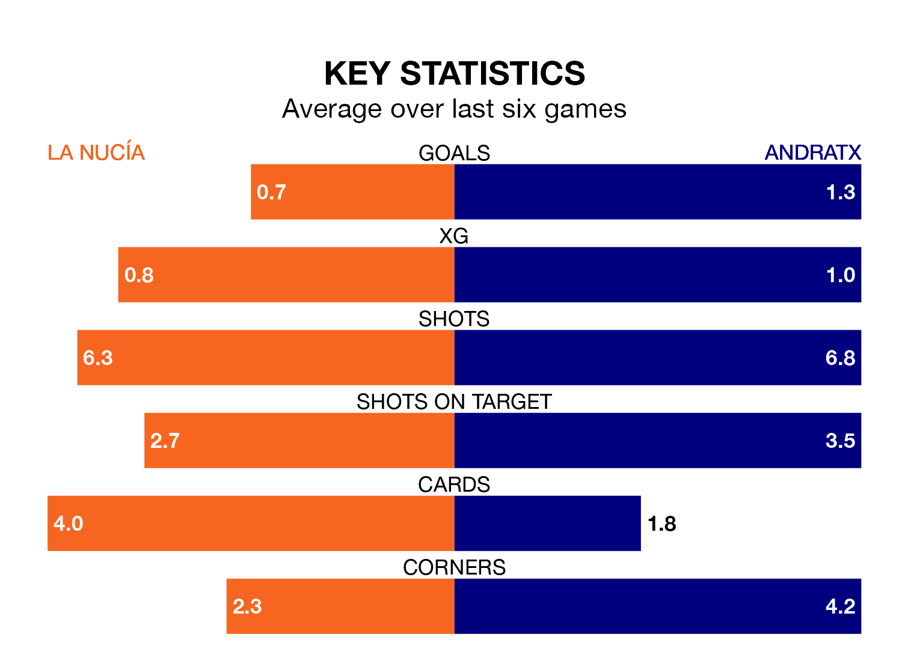

Andratx travel to La Nucía on early Sunday in the Segunda División RFEF Group 3.
The visitors come into the game on the back of a defeat in their last match, having lost to Hércules CF 2-0 at home.
La Nucía also lost their last match, 4-1 against UE Sant Andreu, with their goal scored by Mario Robles Domínguez.
La Nucía are bottom of the table after 22 games, of which they have won three and drawn seven, earning 16 points.
Andratx are seven places ahead of la Nucía in 11th, with seven wins and seven draws putting them on 28 points.
With 14 goals in 22 games so far this season, the hosts are the league's lowest scorers with 0.6 goals per game. And they are conceding more than average, letting in 33 goals at a rate of 1.5 per game.
The away team, meanwhile, are average scorers, with 1.2 goals per game. They have conceded 1.4 goals per game.
La Nucía are in disappointing form in the Segunda División RFEF Group 3, with one win and three draws from their last six games.
With a win and two draws over that period, Andratx's form is slightly worse – they have taken five points from 18, compared to La Nucía's six.
Updated: 13:04 (UTC), 16/02/24